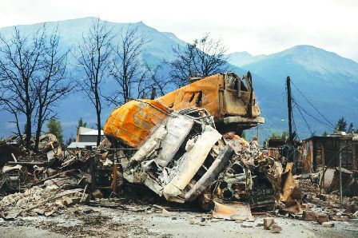

阿省贾斯珀周五，火灾后一小堆被烧毁的汽车。
阿省目前仍有近120处山火，其中贾斯帕综合山火(Jasper Wildfire Complex)已焚毁约3.2万公顷土地，目前仍然失控。省府为早前被勒令撤离的灾民安排巴士，到灾区视察灾情，官员称车队最快今日出发。
阿省政府前天向贾斯帕灾民开放登记，让民众乘坐巴士视察他们的物业损毁情况，但在日期尚未确定。阿省紧急事务管理局(Alberta Emergency Management Agency)副执行总监扎特尔尼(Joe Zatylny)在昨午以视像形式举行的记者会上透露，若情况许可，最快可望今日开始有关巴士团，如果情况足够安全，当局将安排巴士从爱蒙顿和位于贾斯帕国家公园(Jasper National Park)以东小镇欣顿(Hinton)出发。
扎特尔尼指，有关活动向所有灾民开放，但巡视必须在严格控制的情况下进行，且人数有限，当局将优先考虑房屋受损或被摧毁的民众，而在巡视期间居民不可离开巴士。
联邦公园局早前估计，当地1,113楝建筑物中，有358楝已损毁，当中最严重的结构损坏集中在贾斯帕以西和米耶特大道(Miette Ave.)以南。该部门事故副指挥官麦克唐纳(Dean MacDonald)称，贾斯帕综合大火已焚毁约3.2万公顷土地，目前仍然失控。
根据阿省山火局(Alberta Wildfire)的最新资料显示，截至昨午3时15分，全省共有119处山火。
贾斯帕国家公园昨午在社交媒体发布的贴文指，乾燥炎热天气导致该国家公园火灾活动增加，特别是马林湖(Maligne Valley)，工作人员尚未到该处救火。贴文称，消防人员和飞机合力下，令诸如伊迪丝湖(Lake Edith)和安妮特湖(Lake Annette)等地以及金字塔平台区(Pyramid Bench)的火势受控。
与此同时，贾斯帕消防局长孔蒂(Matt Conte)在昨晨另一个视像记者会上表示，镇上的清理工作仍然继续，工作人员已隔离约八成受损和被破坏的物业，但有关工作可望不日之内完成，而所有有倒塌风险的受损树木也可望在日内移走。
他又说，工作人员正竭力确保镇内的消防系统和水压回复正常，他们已让贾斯帕北部恢复供水，当局已收集水质样本并发送到省府进行检测，确保当地食水可以饮用，检测结果将于周二公布，至于废水处理厂正在运作，它没有受损，并一直正常运作。